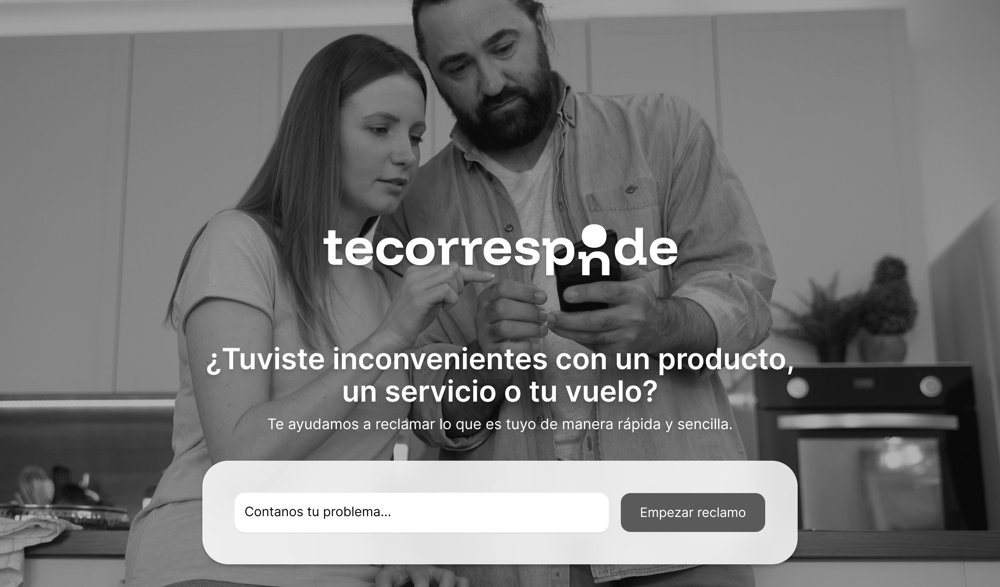
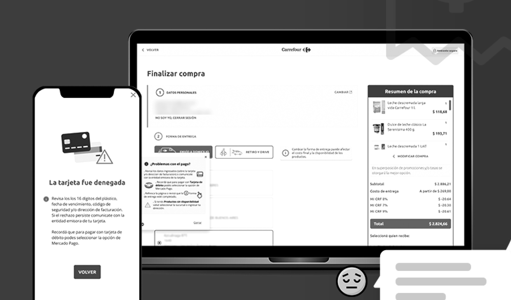

Casos de estudio

Te corresponde
Diseño 0→1 de una plataforma de gestión de reclamos de consumo en Argentina, de la oportunidad de mercado al producto en producción.
Ver el caso completo
Checkout, oportunidad de mejora
Cómo bajamos 11% la fuga de usuarios en el pago de carrefour.com.ar: research con GetFeedback, fast fixes y rediseño de pantallas.
Ver el caso completo
Rediseño e-commerce B2B
De outlet online a socio estratégico: audit heurístico y rediseño de home, header, buscador y cuenta para una distribuidora ferretera líder en Ecuador.
Ver el caso completoPedidos por IA para e-commerce B2B
Del prompt al carrito: propuesta de alta de pedido en lenguaje natural para la tienda B2B de una empresa líder de alimentos en Argentina.
PróximamenteBanca: sacar el trabajo diario de SAP
PoC de una plataforma interna para un banco de Centroamérica: login, alta de clientes y pool de trabajo, fuera de las pantallas de SAP CRM.
PróximamenteDe problema de negocio a producto en producción
No diseño pantallas sueltas: tomo decisiones de producto, apoyadas en research real y trabajo codo a codo con desarrollo y negocio.
Ownership de punta a punta
Me hago cargo del proceso completo (research, arquitectura de información, prototipado y validación en producción), no solo de la ejecución visual de un flujo ya definido.
El punto de encuentro entre negocio y desarrollo
Desarrollo y negocio recurren a mí cuando hay un problema de UX sin resolver. Diseño dentro de las restricciones reales del roadmap, no en un vacío.
IA generativa en todo el ciclo
Uso IA generativa para research synthesis, ideación, prototipado funcional y documentación, para acelerar la entrega sin resignar rigor.